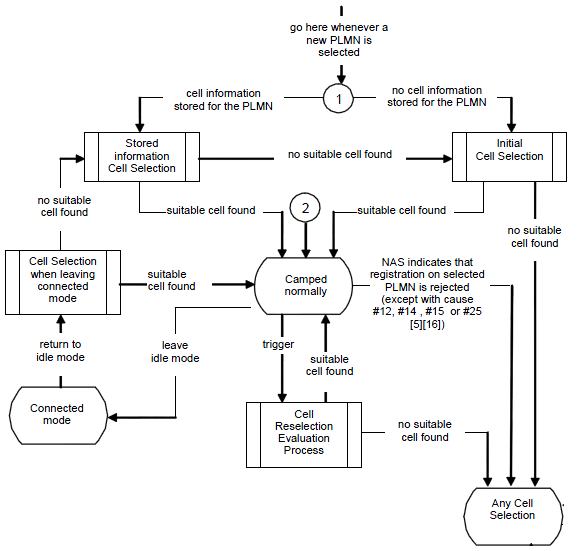
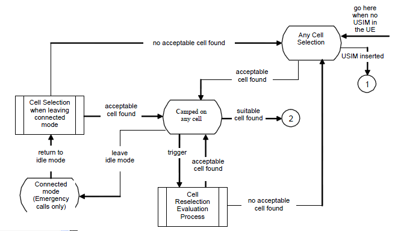

|
LTE Basic Procedure Go Back To Index Home : www.sharetechnote.com |
|
|
Note : See "Idle Mode Procedure" section first for the big picture.
Cell Selection
When you power on the mobile device, in most case the device is under a circumstance where it sees many base station (eNode B) around it. In some cases UE would be surrounded not by the multiple basestation from one system operator but by the multiple basestation from multiple system operators. Out of those many cells, UE can camp on (register) to only one cell. Then the question is which specific single cell the UE have to register. For this UE goes through a specific decision making process to pick up a specific base station (cell) to register, this specific decision making process is called 'Cell Selection'.
Overall description of cell selection process is described in 36.304 Figure 5.2.2-1: RRC_IDLE Cell Selection and Reselection as follows. Of course the minimum condition is to meet Cell Selection Criterion .
Pretty complicated flow diagram, right ? But you will find it even more complicated if you try to associate this flow to the situation you come across when you test the device in real life. You see in this flow diagram many branches and loops which makes it difficult to follow the right path and other thing is that it is not so easy to figure the exact status of the UE when you turn on the UE.
Let me give you some examples in which UE needs to go through the cell selection process. To be honest, I don't know exact answer to the cases that I would give you here.
i) You got a new phone from the shop and just inserted the USIM and power on the device. ii) You have been using a phone for a while, and power it off and then power on. iii) You have been using a phone for a while and switch it to Airplan mode and then switch back to the normal mode. iv) You have been using a phone for a while and switch it to Airplan mode and flew into another country and then switch back to the normal mode. v) You just turned on a phone and turn it off right away in the middle of registration and then turned it on. vi) Turned off the phone you have been using and pull out the battery and then put the battery back and turn it on. vii) Turned off the phone you have been using and pull out the battery, pull out the USIM and put a new USIM in and then put the battery back and turn it on. viii) Turned of the phone you have been using and leave it off for several days and then turn it on. ix) Turned of the phone you have been using and take out the USIM, and then turn it on without USIM.
Can you mark the path on this flow diagram for each of the cases listed above ? To be honest, I may be able to do it only a couple of the case and not for all. If you have access to UE logging tools, try to collect field test log in various situation and analize the log according to this flow charts. Only practice would make you understand this clearly unless you are the protocol stack developer who implements this process in UE.
 
Followings are the keywords that you have to know in order to understand the follow chart shown above.
Acceptable Cell
Acceptable cell is the cell that is not enough to be a suitable cell, but meets the minimum condition at least to make an emergency call. The minimum conditions are
Suitable Cell
The cell that the UE may camp on for a normal service. The E-UTRA and UTRA Suitable Cell criteria is defined in 35.304 4.3 Service types in Idle Mode as follows.
The cell is part of either:
according to the latest information provided by NAS:
|